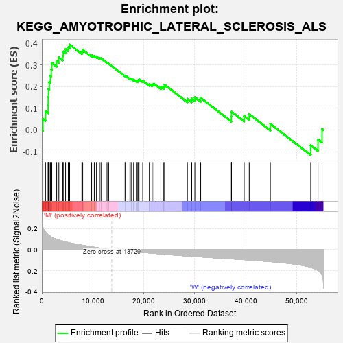
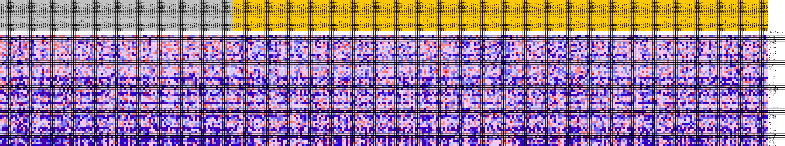
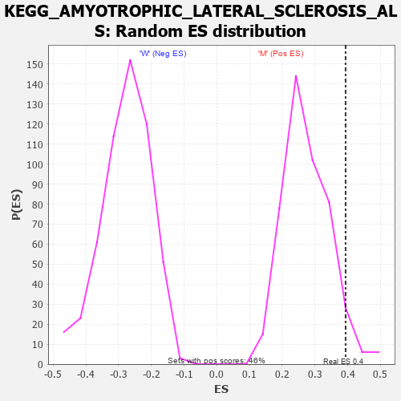

| Dataset | MUC16.MUC16.cls#M_versus_W.MUC16.cls#M_versus_W_repos |
| Phenotype | MUC16.cls#M_versus_W_repos |
| Upregulated in class | M |
| GeneSet | KEGG_AMYOTROPHIC_LATERAL_SCLEROSIS_ALS |
| Enrichment Score (ES) | 0.39347097 |
| Normalized Enrichment Score (NES) | 1.431406 |
| Nominal p-value | 0.05869565 |
| FDR q-value | 0.24972439 |
| FWER p-Value | 0.848 |

| PROBE | DESCRIPTION (from dataset) | GENE SYMBOL | GENE_TITLE | RANK IN GENE LIST | RANK METRIC SCORE | RUNNING ES | CORE ENRICHMENT | |
|---|---|---|---|---|---|---|---|---|
| 1 | CASP3 | na | 207 | 0.209 | 0.0520 | Yes | ||
| 2 | PPP3CA | na | 722 | 0.165 | 0.0868 | Yes | ||
| 3 | MAP2K3 | na | 1237 | 0.141 | 0.1151 | Yes | ||
| 4 | GRIN2D | na | 1252 | 0.140 | 0.1522 | Yes | ||
| 5 | APAF1 | na | 1310 | 0.138 | 0.1881 | Yes | ||
| 6 | TOMM40 | na | 1464 | 0.132 | 0.2206 | Yes | ||
| 7 | CHP1 | na | 1690 | 0.126 | 0.2501 | Yes | ||
| 8 | MAP3K5 | na | 1845 | 0.121 | 0.2795 | Yes | ||
| 9 | TOMM40L | na | 1955 | 0.118 | 0.3089 | Yes | ||
| 10 | GRIN1 | na | 2910 | 0.098 | 0.3178 | Yes | ||
| 11 | CYCS | na | 3335 | 0.091 | 0.3345 | Yes | ||
| 12 | CASP9 | na | 4119 | 0.080 | 0.3418 | Yes | ||
| 13 | BID | na | 4195 | 0.079 | 0.3616 | Yes | ||
| 14 | DERL1 | na | 4655 | 0.073 | 0.3728 | Yes | ||
| 15 | CAT | na | 5179 | 0.067 | 0.3813 | Yes | ||
| 16 | SOD1 | na | 5456 | 0.064 | 0.3935 | Yes | ||
| 17 | MAPK13 | na | 7853 | 0.042 | 0.3614 | No | ||
| 18 | DAXX | na | 8022 | 0.041 | 0.3693 | No | ||
| 19 | ALS2 | na | 9769 | 0.027 | 0.3448 | No | ||
| 20 | RAB5A | na | 10290 | 0.023 | 0.3414 | No | ||
| 21 | NEFH | na | 10723 | 0.020 | 0.3388 | No | ||
| 22 | TNF | na | 11311 | 0.015 | 0.3323 | No | ||
| 23 | TP53 | na | 11609 | 0.014 | 0.3305 | No | ||
| 24 | CASP1 | na | 12792 | 0.006 | 0.3107 | No | ||
| 25 | MAPK12 | na | 13114 | 0.004 | 0.3058 | No | ||
| 26 | TNFRSF1B | na | 16330 | -0.007 | 0.2494 | No | ||
| 27 | MAP2K6 | na | 16445 | -0.007 | 0.2493 | No | ||
| 28 | SLC1A2 | na | 17283 | -0.012 | 0.2373 | No | ||
| 29 | PRPH | na | 17523 | -0.013 | 0.2365 | No | ||
| 30 | GPX1 | na | 18011 | -0.016 | 0.2319 | No | ||
| 31 | PPP3R1 | na | 18549 | -0.018 | 0.2270 | No | ||
| 32 | PPP3CC | na | 18833 | -0.020 | 0.2272 | No | ||
| 33 | NEFL | na | 18952 | -0.020 | 0.2304 | No | ||
| 34 | MAPK14 | na | 19076 | -0.021 | 0.2338 | No | ||
| 35 | TNFRSF1A | na | 19800 | -0.024 | 0.2272 | No | ||
| 36 | BAX | na | 21097 | -0.030 | 0.2117 | No | ||
| 37 | CHP2 | na | 21658 | -0.033 | 0.2103 | No | ||
| 38 | RAC1 | na | 21990 | -0.034 | 0.2134 | No | ||
| 39 | GRIN2B | na | 23354 | -0.040 | 0.1993 | No | ||
| 40 | GRIN2C | na | 23933 | -0.042 | 0.2000 | No | ||
| 41 | MAPK11 | na | 24102 | -0.043 | 0.2084 | No | ||
| 42 | CCS | na | 28566 | -0.059 | 0.1434 | No | ||
| 43 | BCL2L1 | na | 29417 | -0.062 | 0.1446 | No | ||
| 44 | BAD | na | 30032 | -0.064 | 0.1506 | No | ||
| 45 | NOS1 | na | 31175 | -0.068 | 0.1479 | No | ||
| 46 | PPP3R2 | na | 37199 | -0.086 | 0.0619 | No | ||
| 47 | BCL2 | na | 37223 | -0.086 | 0.0846 | No | ||
| 48 | PPP3CB | na | 39713 | -0.095 | 0.0647 | No | ||
| 49 | GRIA2 | na | 40704 | -0.098 | 0.0730 | No | ||
| 50 | NEFM | na | 44848 | -0.113 | 0.0281 | No | ||
| 51 | GRIA1 | na | 52771 | -0.167 | -0.0709 | No | ||
| 52 | PRPH2 | na | 54206 | -0.197 | -0.0442 | No | ||
| 53 | GRIN2A | na | 55004 | -0.237 | 0.0048 | No |

